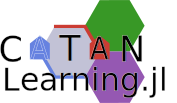
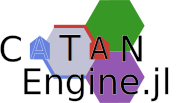
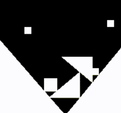

Various technical projects of mine.
Projects
CatanLearning.jl
(2024 - )

CatanLearning.jl uses CatanEngine.jl to implement reinforcement-learning players which learn high-level strategies via self-play.
CatanEngine.jl
(2023 - )

CatanEngine.jl is an engine for playing Settlers of Catan with human and scripted players.
WikiSwitcher
(2024)
WikiSwitcher is a Google Chrome Extension to automatically choose the best language for a given Wikipedia article among the user's configured languaged.
Fizz-2D
(2017 - 2019)

Bare-bones 2D physics engine for handling interactions of rigid convex polygons on a 2D plane.